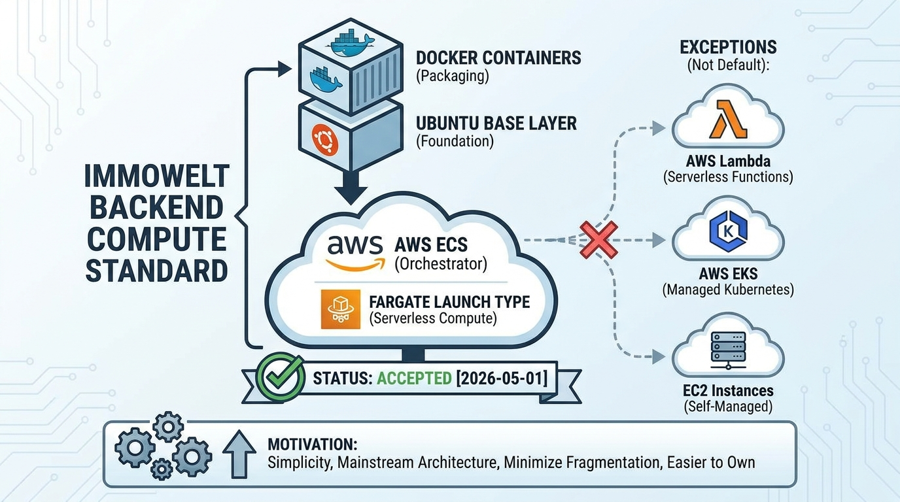

Infrastructure
Compute Infrastructure: Standardize on Docker, ECS Fargate, and Ubuntu Base Images

Image generated by Google Gemini (gemini-3-pro-image-preview)
Infrastructure

Image generated by Google Gemini (gemini-3-pro-image-preview)